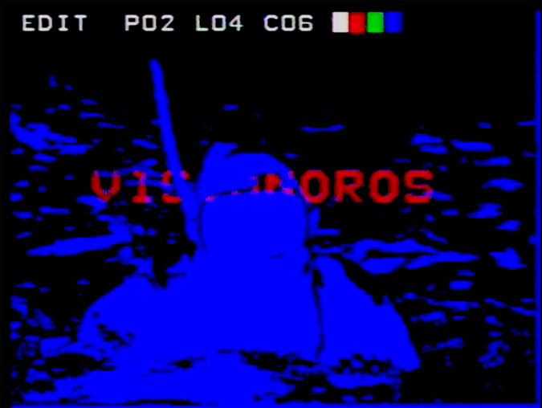
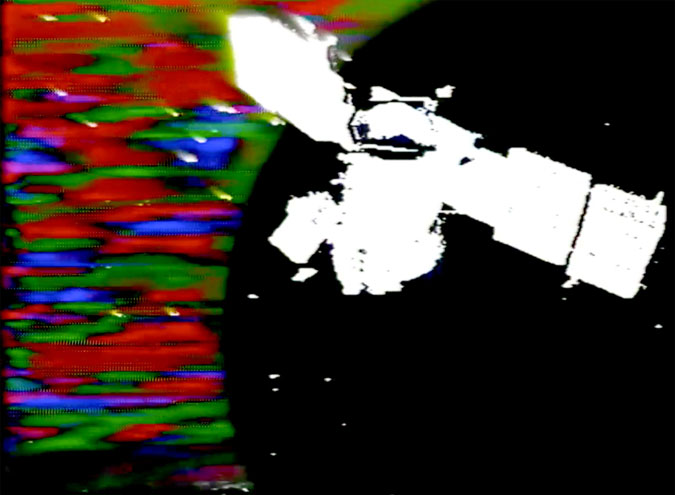
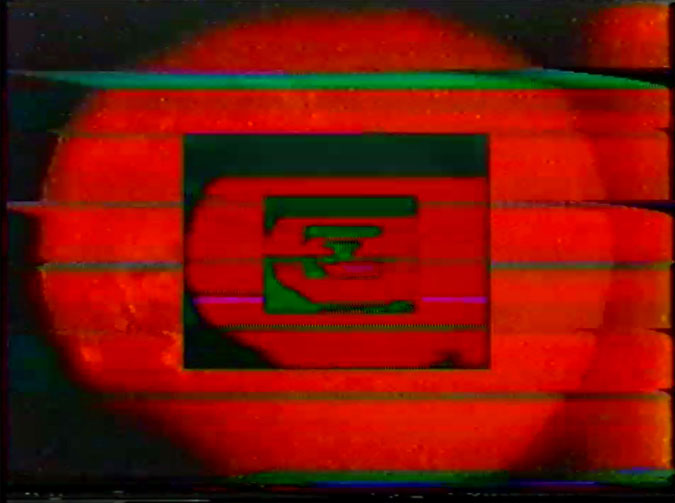
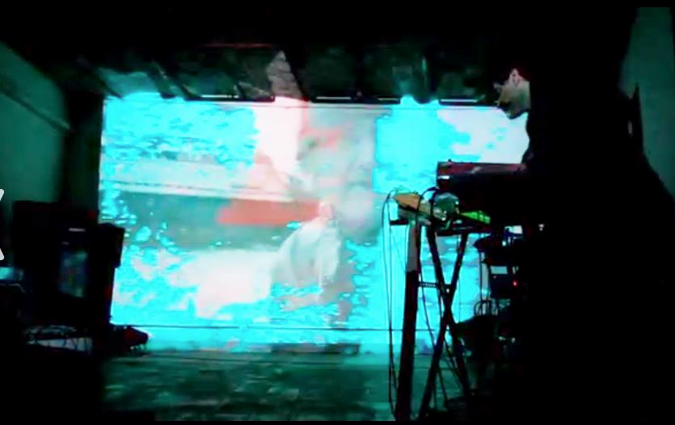

Full Credits
VHS feedback Mario
Guzman
Homemade projector Mariana
Lombard
Live animations Celestial
Brizuela
Live coding music Leandro
Yako
Soundscapes Agustín Ramos
Anzorena
Live Music Santi
Lesca
Voice Rochi Gallardo
Custom guitar Leonardo
Salzano
Exhibitions
Latin American Narrative and Visual
Experimentation.Floating Projects Gallery, May 4th, Hong Kong,
2019.
ZERO1. Quinzaine
Digitale.Maison Henri II, La Rochelle, France,
2017.
Poextrónica: Past and Future of Digital Literature. Zona Futuro, 43rd
International Book Fair. La Rural, Buenos
Aires, Argentina, 2016.
Espacio Nixso. Buenos Aires, Argentina,
2015.
Casa Dasein. Buenos Aires,
2015.
Eye Reverse. Arkhé Collective. Matienzo
Cultural Center, Buenos
Aires, Argentina, 2015.
Cries in the Depths. Transterritorial
Underground Film Festival. Una
Casa, Buenos Aires, Argentina, 2014.
Sideral Party. Kasa Las Estrellas.
Buenos Aires, Argentina,
2014.
Visionoros Vol. 1. VideoClub Boedo,
Buenos Aires, Argentina,
2013.